Reflection · verification · on-policy distillation
ReflectOPD
Reflect, Verify, Distill:
Reflective On-Policy Distillation for Diffusion Models
A real couch-and-cup example improves across two reflection rounds. Reflection Skill Optimization learns when to intervene and how to revise, pairing failure conditions with reusable corrections, such as raising the upper object with physical support. A skill-augmented reflector revises failed on-policy rollouts. At the same rollout state, an EMA teacher evaluates both the original and verified revised prompts; their velocity difference is extrapolated to form the distillation target. The student matches this target while conditioned on the original prompt. The final scene follows the original request “a photo of a cat below a backpack” through the ReflectOPD-trained model (v27, step 1800) to its output. It requires one generation and no external reflection loop. No hook is specified in the prompt; the model adds one. A small gray inset shows the base model’s incorrect relation. These are existing qualitative evaluation samples, with different random seeds.
From test-time correction to one-pass generation. ReflectOPD first discovers how to fix a failure, then internalizes that correction in the student.
training-free · oracle verifier
after ReflectOPD
after distillation
on unseen aspects
Overview
Reflection reveals the correction
Diffusion models often miss a requested count, relation, attribute, or exact text even when the underlying visual concept is within their capability. At test time, a user naturally inspects the failed image, reasons about what went wrong, and rewrites the prompt. We turn this behavior into a systematic reflective loop: a multimodal reflector reads the image and verifier feedback, preserves useful changes from earlier attempts, and proposes the next prompt.
Reflection Skill Optimization consolidates successful and failed trajectories into reusable rules that improve the stability of this loop. ReflectOPD then removes its inference overhead. The evolving student rolls out its own samples; an EMA teacher follows verified reflective revisions, and the student matches the resulting corrective velocity while still conditioning on the original prompt.
Key finding
The gain comes from targeted revision
Better prompt following does not require blind resampling. The important signal is what to change, what to keep, and whether the revision actually works.
Training-free results use frozen FLUX.1-dev on 553 GenEval prompts, with Gemini-3.6-Flash as the reflector and the official GenEval detector as both the oracle verifier and evaluator. Pass rates are cumulative across up to three reflection rounds.
Preserve partial success
A failed image can still contain a useful correction. History lets the next round keep the good change while fixing the remaining failure.
95.6%Round-3 macro pass rate with historyMake reflection stable
The summarizer converts recurring successful strategies into explicit rules and validates each updated skill before adoption.
96.9%Round-3 macro pass rate with history + skillRemove the loop at inference
ReflectOPD trains the student on its own evolving failures and transfers verified corrections back to the original prompt condition.
0.92GenEval overall · one sampleSame request, different outcome
“a photo of a couch below a cup”
The first revision successfully raises the cup onto a shelf but loses the couch. The second keeps the shelf and makes the couch visually explicit.
Method
Reflect, consolidate, distill
The test-time loop discovers verified semantic corrections. The training-time loop turns them into a stronger generator.
Effect of history and skill
GenEval macro · 553 promptsTransfer across reflectors
Same frozen skillBenchmarks
One checkpoint, broader gains
The GenEval-trained model improves related compositional benchmarks and transfers to unseen TIIF aspects without benchmark-specific training.
FLUX.1-dev · one sample
0.4817 base
Soft-TIFA GM × 100
Six unseen aspects
Main results on GenEval
Official detector evaluation across six prompt families. Baseline and inference-time scaling results are taken from the published ReflectionFlow comparison. The candidate budget counts generated candidates per output, not denoising steps or the number of evaluation seeds.
FLUX.1-dev
| Method | Candidate budget | Single | Two | Count | Color | Position | Binding | Overall |
|---|
SANA-1.0-1.6B
| Method | Candidate budget | Single | Two | Count | Color | Position | Binding | Overall |
|---|
Qualitative examples
Reflective Prompt Revise
Every trajectory begins with a failed generation and ends with a verifier-approved result. Select an image or reflection round to read the problem, strategy, and revised prompt below.
Qualitative comparison
Same prompt, every method
All four prompts are shown together. Each row compares the final output of the base model, ReflectionFlow, Flow-GRPO, and ReflectOPD.
Task extension
Extend to visual text rendering
We extend ReflectOPD to visual text rendering, where the generator must reproduce the requested words while preserving the scene. The Spring Collection 2024 example uses our OCR-trained v26 model at step 2,000 (1024 × 1024); the remaining examples use v30 at step 1,200.
“Spring Collection 2024”
#00000A high-fashion runway with a sleek, modern backdrop displaying "Spring Collection 2024". Models walk confidently on the catwalk, showcasing vibrant, floral prints and pastel tones, under soft, ambient lighting that enhances the fresh, spring vibe.
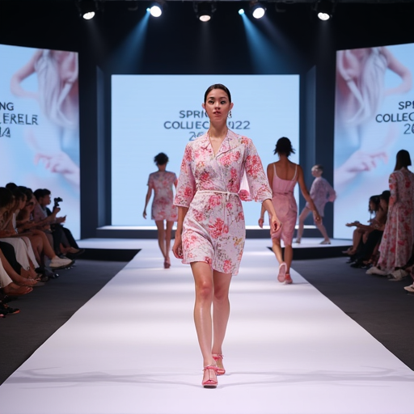
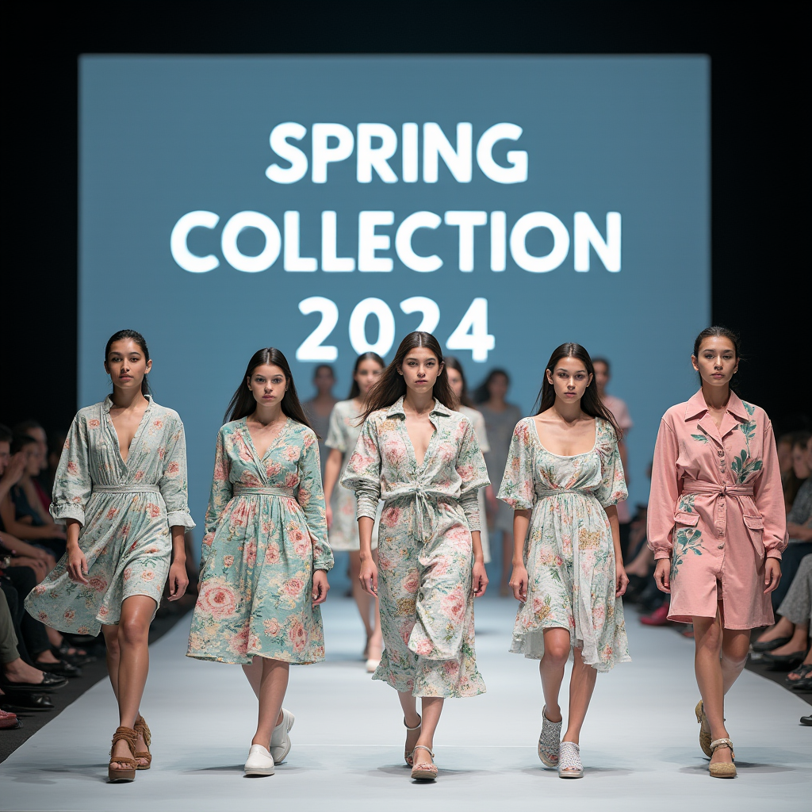
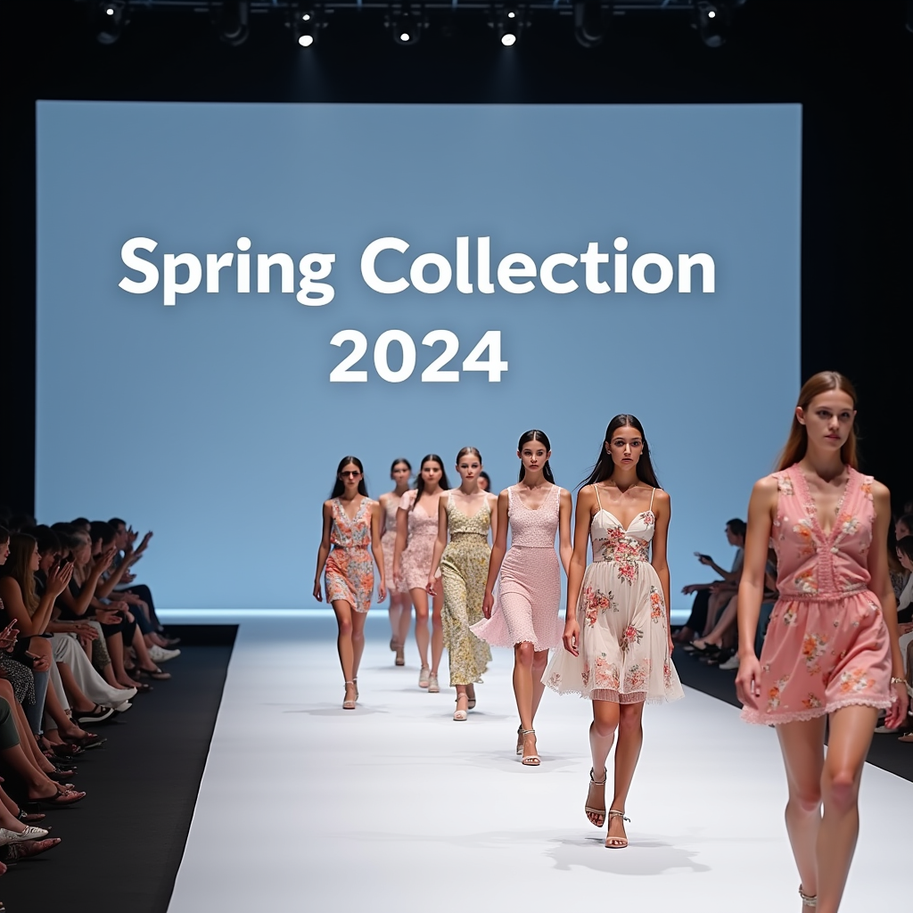
“Hope Sold Here 10 Miles Ahead”
#00260In a desolate, post-apocalyptic landscape, a weathered gas station sign stands tall, reading "Hope Sold Here 10 Miles Ahead". The sign is partially rusted, with a faint glow from a single, flickering light, set against a backdrop of barren, overgrown terrain.
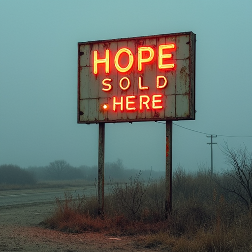
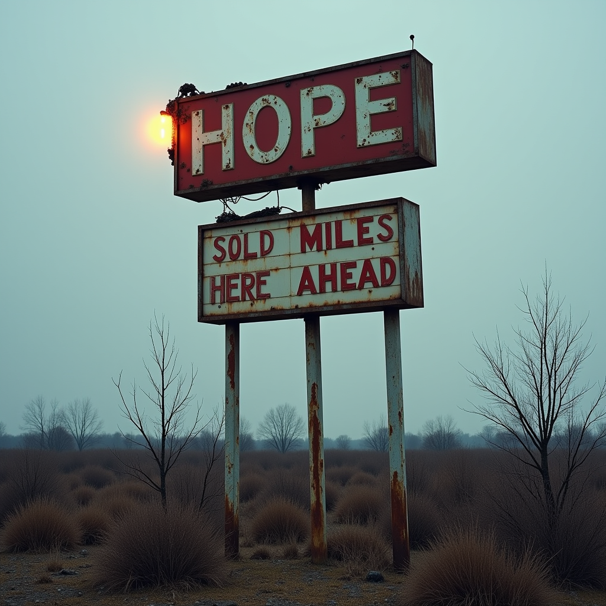
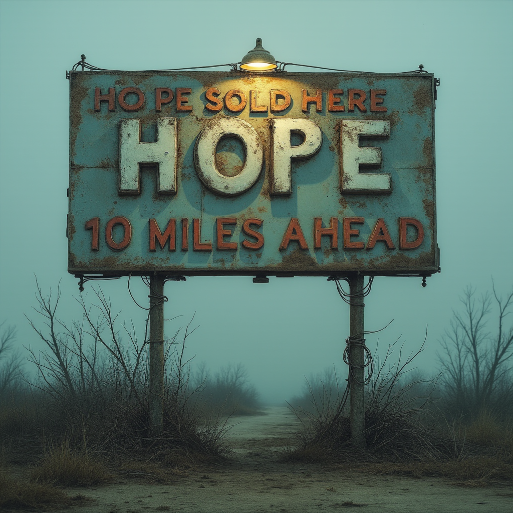
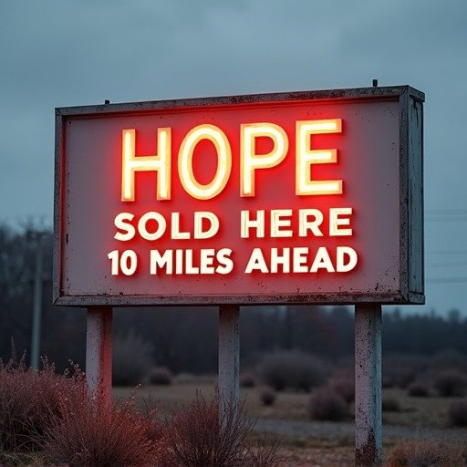
“Magic Show Tonight”
#00228A vintage theater marquee, illuminated by soft neon lights, prominently displays the text "Magic Show Tonight". The marquee is set against a dusk sky, with a few early stars beginning to twinkle. A cobblestone street leads up to the theater, adding to the nostalgic atmosphere.
“Insert Coin”
#00271Retro arcade hall, dimly lit, vintage arcade machine glowing, screen blinking "Insert Coin", surrounded by nostalgic game posters, soft ambient light, 80s atmosphere.
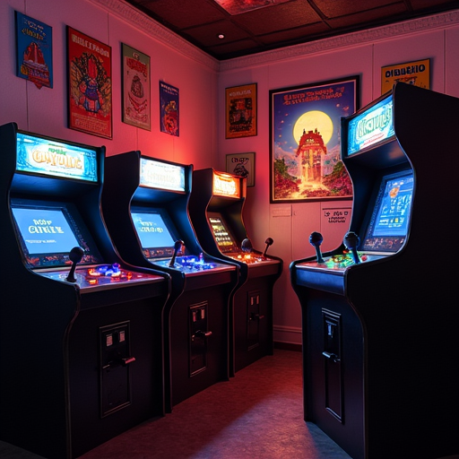
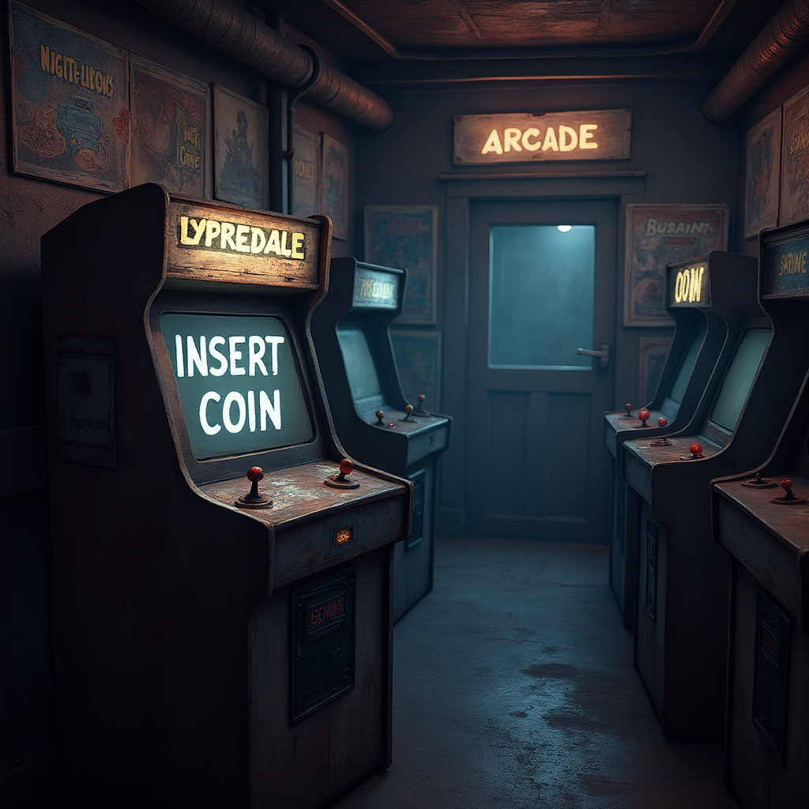
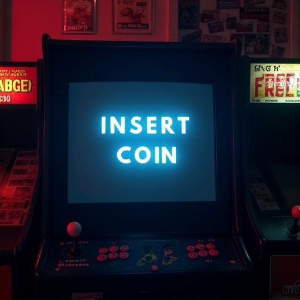
“Play Me 10 Grooves”
#00300A vintage 1950s diner with a retro jukebox labeled "Play Me 10 Grooves" sitting on a polished wooden counter, surrounded by red leather stools and neon signs, capturing the essence of a classic American hangout.
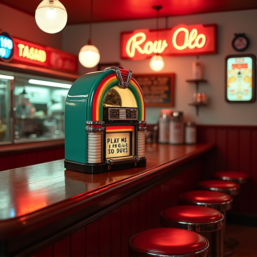
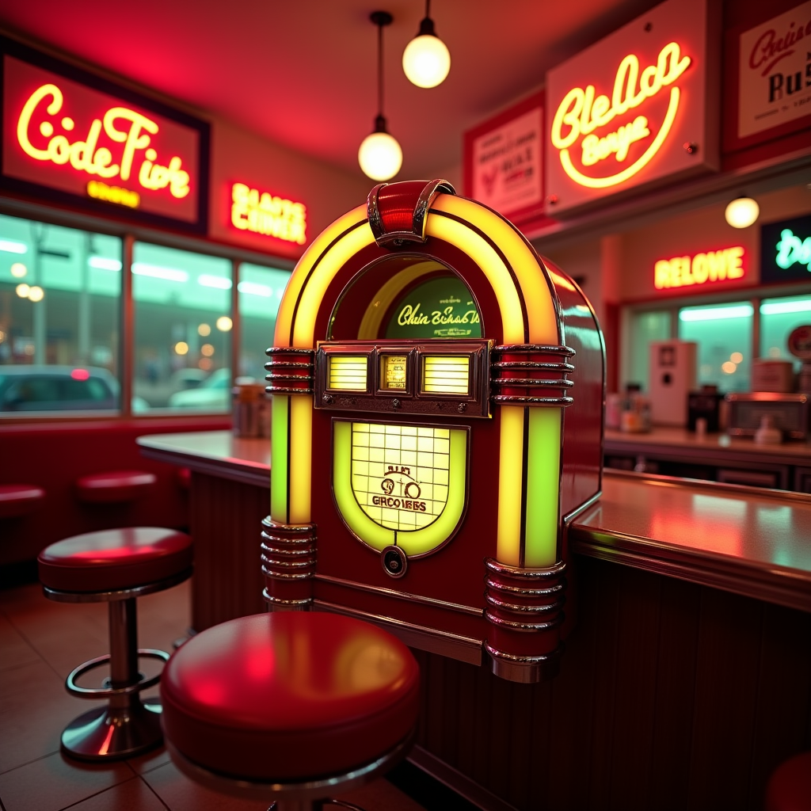
“Sea Legend II”
#00777A serene coastal scene with a fisherman's boat named "Sea Legend II" gently bobbing on the calm waters at sunrise, the golden light casting a warm glow over the wooden hull and the rippling waves.
Discussion with RL
Semantic correction and generation diversity
While RL methods such as Flow-GRPO explore noise space through parallel stochastic rollouts, ReflectOPD refines prompts in text space through sequential reflection and verification.
Alignment and diversity on OneIG-Bench
Four seeds per prompt; diversity is the mean pairwise DreamSim distance. ReflectOPD improves overall alignment and diversity over the base model. Flow-GRPO has higher alignment (0.811 vs. 0.795), while ReflectOPD retains higher diversity (0.265 vs. 0.213) in this evaluation.